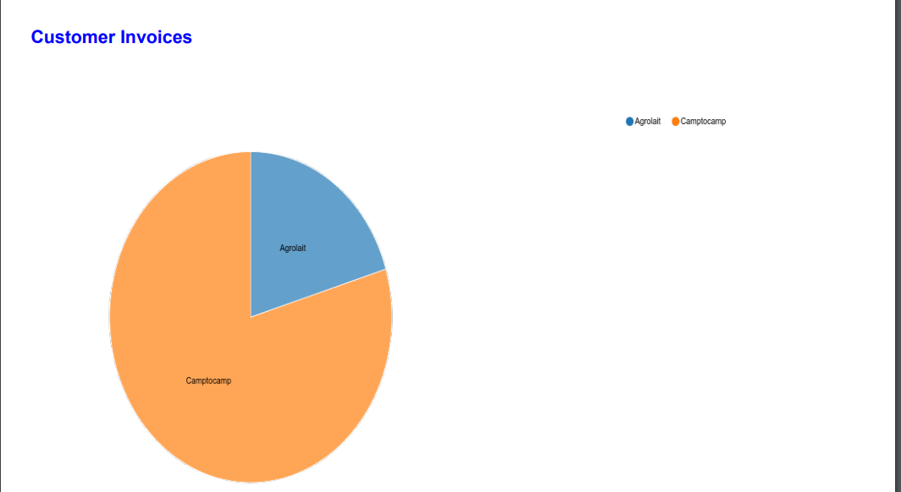

<section class="oe_container">
    <div class="oe_row oe_spaced">
       <h2 class="oe_slogan" style="color:#875A7B;">Print any view to pdf</h2>
       <h3 class="oe_slogan">Only with a simple click</h3>
        <p class="oe_mt32">
        You can generate a report from different view (Graph, pivot, Kanban, ...).
        </p>
        <div class="oe_row_img oe_centered oe_mt32">
            
            
            
        </div>
    </div>
</section>

<section class="oe_container oe_separator">
</section>
